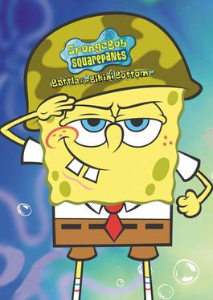

O PlatinumGames é um site criado para ajudar jogadores a conquistarem a platina de seus jogos.
Encontre informações,dicas e guias necessários para conseguir tudo e alcançar a platina.
Sugestões de jogos...
Sally face
Sally Face é um jogo de aventura e terror psicológico que acompanha Sal Fisher, um garoto que usa uma prótese facial azul.
A história envolve mistérios, acontecimentos sobrenaturais e segredos sombrios descobertos ao longo dos capítulos.
O jogo combina investigação, narrativa profunda e elementos de suspense para criar uma experiência misteriosa e perturbadora.
É um jogo dividido em 5 episódios.
Episódio 1 — Strange Neighbors.
Episódio 2 — The Wretched.
Episódio 3 — The Bologna Incident.
Episódio 4 — The Trial.
Episódio 5 — Memories and Dreams.
Para fazer e coletar tudo você gastará em média de 15 á 20 horas de gameplay,Contendo 35 conquistas(7 por episódio)4 selos,11 páginas,5 dentes,9 VHS,6 peças coloridas e tudo isso sem contar com os itens dos puzles.
📕 Episódio 1-Strange Neighbors.
Terminar o episódio.
Fazer a rota do chá.
ouvir Sanity's Fall 2×.
encontrar 3 segredos sobrenaturais.
descobrir o segredo de Larry.
completar os 5 níveis do Gear Boy.
📗 Episódio 2—The Wretched.
Terminar o episódio.
encontrar 4 selos.
descobrir a história dos Addison.
encontrar o fantasma do 403.
resolver a caixa metálica.
completar diálogos com Larry.
completar os capítulos do Super Gear Boy.
📘 Episódio 3 — The Bologna Incident.
Terminar o episódio.
completar o prólogo.
conversa com Travis.
encontrar o fantasma do cultista.
completar Clumpy.
encontrar 11 páginas do diário.
📙 Episódio 4 — The Trial.
encontrar 9 VHS.
conversar com todos.
completar diálogos de Larry.
encontrar 5 dentes.
acertar todas as músicas das barreiras.
acertar a batalha final.
📕 Episódio 5 — Memories and Dreams.
código do galpão.
ler todas as notas.
completar diálogos opcionais.
encontrar 6 peças coloridas.
terminar sem Game Over.
liberar o epílogo.
God of war Ragnarok.
God of War Ragnarök é a continuação de God of War (2018), acompanhando Kratos e Atreus durante os acontecimentos que levam ao Ragnarök, o grande conflito da mitologia nórdica.
100% do jogo são em media de 60 a 70 horas.São 36 troféus: 1 Platina, 4 Ouro, 15 Prata e 16 Bronze. Nenhum dos troféus do jogo base é perdível, então você pode terminar a história e depois fazer a limpeza.
Conquistas Bronze
🌸 A Florista.
Objetivo: Colete uma flor de cada um dos 9 reinos.
Você precisa encontrar as 9 flores da missão "Nove Reinos em Flor".
Não precisa fazer isso durante a história. Dá para voltar depois e pegar todas.
📚 O Bibliotecário.
Objetivo: Colete todos os livros.
São os 14 Poemas de Kvasir espalhados pelos reinos.
Eles aparecem como artefatos roxos e fazem parte da coleção de artefatos.
🏺 O Curador.
Objetivo: Colete todos os artefatos.
São 38 artefatos no total, incluindo os itens obtidos em algumas missões de "Casos de Guerra" em Vanaheim.
💎 Como Tudo Começou.
Objetivo: Equipe um encantamento.
Durante a história você desbloqueia o Amuleto de Yggdrasil. Depois de derrotar Níðhögg, o jogo ensina você a colocar um encantamento nele.
É praticamente impossível perder esse troféu.
✨ Polimento.
Objetivo: Melhore uma peça de armadura.
Vá até qualquer ferreiro e faça qualquer melhoria em uma armadura.
Não precisa chegar ao nível máximo.
⚔️ Tirando a Ferrugem.
Objetivo: Compre uma habilidade.
Abra:Touchpad → Habilidades
Gaste XP em qualquer habilidade.
🐻 Um Encontro Grisalho.
Objetivo: Enfrente o urso.
É o primeiro grande confronto do jogo, durante Sobrevivendo ao Fimbulwinter.
Automático pela história.
⚡ Dívida de Sangue.
Objetivo: Enfrente o Deus do Trovão.
Você luta contra Thor logo no começo da história.
Automático.
🧙 Briga no Quintal.
Objetivo: Enfrente a Valquíria Misteriosa.
Você enfrenta Vanadis durante O Acerto de Contas.
Automático pela história.
🌳 Raiz do Problema.
Objetivo: Enfrente Níðhögg.
Derrote o chefe Níðhögg durante a missão O Acerto de Contas.
Automático.
🫕 O Caldeirão.
Objetivo: Destrua o caldeirão de Grýla.
Durante O Santuário Perdido, enfrente Grýla e destrua o caldeirão dela.
Automático.
🐺 Fora da Coleira.
Objetivo: Enfrente Garm.
Durante Reunião, enfrente o lobo gigante Garm.
Automático.
👁️ Acerto de Contas
Objetivo: Enfrente Heimdall.
Derrote Heimdall durante Criaturas da Profecia.
Automático.
👯 Juntos Somos Mais Fortes.
Objetivo: Enfrente Hrist e Mist.
Você luta contra as duas durante A Invocação.
Automático.
Conquistas Prata
🛡️ Falange
Objetivo: Obtenha todos os escudos.
São 5 escudos no total.
Você consegue alguns através da história, outros criando no ferreiro e outro em um baú lendário.
⚔️ Colecionador
Objetivo: Obtenha todas as Relíquias e Empunhaduras.
São 14 Relíquias/Empunhaduras.
Algumas são encontradas pelo mapa, outras precisam ser fabricadas no ferreiro. Para algumas delas você também precisa encontrar as Páginas Perdidas.
🐉 Matador de Dragões
Objetivo: Fabrique o conjunto de armadura Escamas de Dragão.
Primeiro faça uma das caçadas de dragão no Crater de Vanaheim.
Depois você poderá fabricar:
Peitoral de Escamas de Dragão
Braçadeiras de Escamas de Dragão
Cinturão de Escamas de Dragão
Você precisa dos materiais obtidos derrotando dragões.
💍 Como Está Indo
Objetivo: Repare completamente o Amuleto de Yggdrasil.
O amuleto possui 9 espaços.
Dois já vêm desbloqueados, então você precisa encontrar 7 Joias de Yggdrasil e usá-las no ferreiro para liberar os outros espaços.
⚰️ Funeral para um Amigo
Objetivo: Participe do funeral.
Depois de terminar a história, faça a missão:
Um Funeral Viking
em Svartalfheim.
Essa missão só aparece depois da história.
🔨 Líder Rebelde
Objetivo: Devolva o Martelo da Rebelião.
Faça a missão:
Espírito da Rebelião
em Svartalfheim e devolva o martelo.
🔮 Novos Amigos
Objetivo: Recupere o orbe de Lunda.
Faça a missão:
O Orbe Misterioso
em Vanaheim.
Encontre o orbe e devolva para Lunda.
Gufa Completa
Objetivo: Libere os Hafgufas.
Você precisa completar duas missões em Alfheim:
O Segredo das Areias
A Canção das Areias
Depois de libertar os dois Hafgufas, o troféu aparece.
🐋 Fazendo as Pazes
Objetivo: Libere o Lyngbakr.
Faça a missão:
O Peso das Correntes
em Svartalfheim.
Você precisa libertar o enorme Lyngbakr.
🌳 Foi um Bom Dia
Objetivo: Recupere Mardöll.
Complete:
A Paz Perdida de Freya
no Santuário Vanir, em Vanaheim.
🐲 Espécies Invasoras
Objetivo: Complete todas as caçadas da Cratera.
Na região Cratera de Vanaheim, faça as 9 caçadas:
Jungle
O Que Está Abaixo
Trilha dos Mortos
Caminho da Destruição
Sinkholes
Buraco Tremulante
Céus em Chamas
Planícies
Noite Adentro
Por Vanaheim!
À Vista
Predador Noturno
Também é necessário chegar à Cratera através da missão Cheiro de Sobrevivência.
🐺 Melhores Amigos
Objetivo: Faça carinho em Speki e Svanna.
Complete a missão:
Instinto Animal
em Midgard.
Depois de resolver os problemas dos animais, você poderá acariciar os dois cães.
🦎 Lugar de Direito
Objetivo: Devolva todos os Lindwyrms para Ratatoskr.
Primeiro inicie a missão:
Os Lindwyrms Perdidos
na Casa de Sindri.
Depois encontre os 6 Lindwyrms e coloque-os de volta na árvore de Ratatoskr.
🦌 Coração Puro
Objetivo: Devolva os cervos das quatro estações.
Faça a missão:
Um Cervo para Cada Estação
e encontre os 4 cervos em Vanaheim.
Depois leve todos de volta para Ratatoskr.
🔥 Prova de Fogo
Objetivo: Complete os Desafios de Muspelheim.
Você precisa completar os desafios da Forja de Muspelheim e, posteriormente, os desafios finais.
É uma das atividades necessárias para chegar aos 100%.
🛡️ Pronto para o Compromisso
Objetivo: Melhore completamente um conjunto de armadura.
Escolha um conjunto completo.
Você precisa melhorar:
Peitoral
Braçadeiras
Cinturão
até o nível 9.
Tem que ser o mesmo conjunto; não adianta misturar peças diferentes.
🍎 Barriga Cheia
Objetivo: Consiga todas as Maçãs de Idunn e Chifres de Hidromel de Sangue.
Você consegue esses upgrades abrindo os 35 Baús Nornir.
Eles aumentam:
❤️ Vida máxima
🔥 Fúria máxima
Você precisa abrir os 35 Baús Nornir para conseguir todos.
⚔️ Caminhos Espartanos
Objetivo: Aprenda os ensinamentos espartanos.
É automático pela história.
No começo da missão Reunião, Kratos já terá aprendido os três tipos de Fúria Espartana:
Fúria
Valor
Ira
O troféu aparece automaticamente.
Conquistas Ouro
🌋 Ragnarök
Objetivo: Enfrente o Pai de Todos.
Derrote Odin durante a missão final da história.
Automático.
💀 Erro Grave
Objetivo: Enfrente o Rei Hrólf.
Esse é um dos troféus mais difíceis.
Primeiro você precisa encontrar e derrotar todos os Berserkers.
Depois será liberada a luta contra Hrólf Kraki, o Rei dos Berserkers, em Midgard.
💡 Dica: deixe esse para o final, esteja com equipamentos próximos do nível 9 e leve uma Pedra de Ressurreição.
34. 👑 A Verdadeira Rainha
Objetivo: Derrote Gná.
Depois de terminar a história, Gná aparece no Crucible de Muspelheim.
Ela é uma das inimigas mais difíceis do jogo.
💡 Recomendo deixar para o final e chegar com equipamentos no nível 9.
Conquista Platina
🏆 O Urso e o Lobo
🏆 O Pai e o Filho
Como conseguir:
Consiga todos os outros 35 troféus do jogo base. A Platina aparece automaticamente.
SpongeBob SquarePants: Battle for Bikini Bottom

Bob Esponja: Batalha pela Fenda do Biquíni é um jogo de aventura e plataforma baseado na famosa animação Bob Esponja Calça Quadrada.
A história acompanha Bob Esponja, Patrick e Sandy em uma missão para salvar a Fenda do Biquíni de robôs criados pelo Plankton.
O jogador controla os três personagens, cada um com habilidades diferentes para superar desafios.
O jogo apresenta fases variadas, com exploração, combates e resolução de quebra-cabeças.
Os cenários são inspirados no mundo da série, trazendo locais conhecidos pelos fãs.
Durante a aventura, é possível coletar itens e enfrentar diversos inimigos.
O título se destaca pelo humor, pela jogabilidade simples e pela fidelidade ao desenho original.
É considerado um dos jogos mais populares baseados na franquia do Bob Esponja.
🧽 GUIA DE 100% — BOB ESPONJA: BATALHA PELA FENDA DO BIQUÍNI.
Para obter todos os itens você precisa coletar 100 golden espatulas,80 patrick's socks,todos os tipos de robô
todos os chefes e todos os desafios e missões.
🗺️Principais areas e chefões que você ira passar.
01 — 🏠 Bikini Bottom.
Comece sua aventura, aprenda as habilidades básicas e libere as primeiras áreas.
Principais objetivos:
Explorar a área.
Coletar Golden Spatulas.
Encontrar Socks.
Completar as primeiras missões.
02 — Jellyfish Fields.
Uma das primeiras áreas de exploração.
Principais objetivos:
Completar as missões.
Encontrar Golden Spatulas.
Encontrar Socks.
Derrotar o King Jellyfish.
👑 Chefe: King Jellyfish.
Derrote o King Jellyfish para avançar na aventura.
03-🥊Poseidome.
🤖 Chefe: Robo-Sandy.
Prepare-se para uma das primeiras grandes batalhas do jogo.
Estratégia básica
Evite os ataques.
Espere uma abertura.
Ataque quando Robo-Sandy estiver vulnerável.
Repita até vencer.
🦐 Chefe: Prawn.
Para chegar nesse chefão é preciso passar da area anterior a essa(Mermalair).
04— 🏭Industrial Park.
🤖 Chefe: Robo-Patrick.
Tenha cuidado com as plataformas e o Goo durante a batalha.
05 — 🧪 Chum Bucket Lab.
A parte final da aventura.
🤖 Chefe final: Robo-SpongeBob.
Prepare-se para a batalha final e complete os últimos objetivos necessários para terminar a campanha.
🧦 COLEÇÃO DE SOCKS.
As areas que você tem que ir para conseguir os 80 socks.
Bikini Bottom.
Jellyfish Fields.
Downtown Bikini Bottom.
Goo Lagoon.
Rock Bottom.
Mermalair.
Sand Mountain.
Kelp Forest.
Flying Dutchman's Graveyard.
spongeBob's Dream.
Com você visitando todas essas areas,derrotando todos os chefes,coletando todos os itens e realizando as missões dos personagens,irá conseguir ter o jogo platinado.